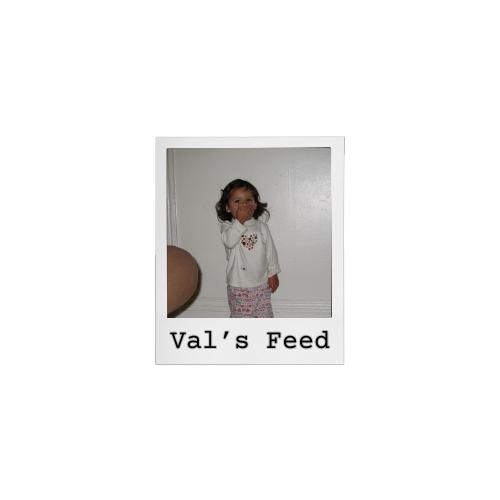

Welcome to My Feed

Hola! Welcome to my Feed, A little peak of my daily phone habits.
I use vsco to edit
some of my pictures
I like the aestethic of this app
🎞️
Reality of a SF commuter
🚌
One of my favorite spots in San Francisco,
Fun Fact the Sutro Baths were once the
largest indoor swimming establishment
in the world.
It is now an eerie ruin
sitting in one of the most beautiful
settings in San Francisco.🌊 🌁
have way too many gmail accounts,
but i check gmail more than any social media app
💌
Gym time!
🏋🏽 I 🧡 Fitness SF
social app i use the most!
Ive been using it for such a long time
i have multiple acoounts, including my photography account!
I really love posting when i travel,
instagram for me feels more like a photo
diary, i just like how pretty it looks 📸 🎞️
spend about 3 hours on linkedin, It is currently my most used app.
on the work grind trying to look for an internship.
Sadly have not yet found one,
but Linkedin is such a helpful app.
Lets Connect on Linkedin!
👐🏼
The daily phone call with the
boyfriend, the reality of Long Distance
Relationship ✈️ ❤️
I love pinterest i check it once
per day, I get so many inspiration starting
from outfits to phtooshoot ideas 🪞
Spotify is the app i
will pay for a lifetime, I am constantly listening to music. 🎶
This is my passion, sticker
making will forever be my favorite thing to do 🫏
Ive been playing this game since
i was like 12 years old, and i will forever play it. 🏄🏻♀️